1.
Our Sun2.
Mercury Venus Our Moon Mars3.
Asteroid Belt4.
Jupiter Saturn Uranus Neptune5.
Pluto6.
CometsA spacecraft is a vehicle or machine designed to fly in outer space. Spacecraft are used for a variety of purposes, including communications, Earth observation, meteorology, navigation, space colonization, planetary exploration, and transportation of humans and cargo.
All spacecraft except single-stage-to-orbit vehicles cannot get into space on their own, and require a launch vehicle (carrier rocket).
This article covers spacecraft that left Earth orbit to explore our Solar System and were fully or partially successful.
Reference: Wikipedia - Spacecraft
A robotic spacecraft is an uncrewed spacecraft, usually under telerobotic control.
Space missions are more suited to telerobotic rather than crewed operation, due to lower cost and lower risk factors. In addition, some planetary destinations are too hostile for human survival or are too distant to reach with current crewed spacecraft technology.
The only crewed missions to explore the Solar System, so far, were the Apollo missions to the moon. All other missions were telerobotic.
Reference: Wikimedia - Robotic Spacecraft
The table below lists all spacecraft, to date, used to study our Solar System. It only includes spacecraft that left Earth orbit and were fully or partially successful.
Point to ℹ for table information. (Table head remains visible while scrolling). Select the Spacecraft name for more information. Select thumbnail image to enlarge.
| Spacecraft | Launcher | Country | Year | Target | Notes | Image |
| Advanced Composition Explorer | Delta 7920-8 | U.S. | 1997 | Our Sun | ACE studies energetic particles from the solar wind, the interplanetary medium, and other sources. |  |
| Akatsuki | H-IIA 202 | Japan | 2010 | Planet Venus | Uses cameras to study atmospheric stratification and cloud physics. Also known as the Venus Climate Orbiter (VCO) and Planet-C. |  |
| Apollo 8 | Saturn V | U.S. | 1968 | Our Moon | First crewed mission to the Moon. Completed ten orbits of the Moon, returned to Earth on 27 December. | 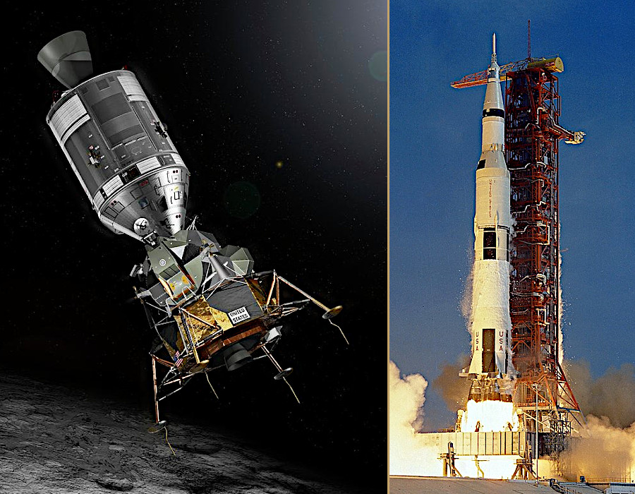 |
| Apollo 10 | 1969 | Lunar Module with two astronauts descended to a distance of 14 km above the lunar surface. | ||||
| Apollo 11 | Lunar Module Eagle landed on 20 July 1969. First crewed landing on the Moon. | |||||
| Apollo 12 | Lunar Module landed on 19 November 1969. Second crewed landing on the Moon. | |||||
| Apollo 13 | 1970 | Mission aborted following Service Module tank explosion. Flew around the Moon and returned safely to Earth. | ||||
| Apollo 14 | 1971 | Lunar Module landed on 5 February in the Fra Mauro highlands. Third crewed landing on the Moon. | ||||
| Apollo 15 | Lunar Module landed on 30 July. Fourth crewed landing on the Moon and first to use a rover. | |||||
| Apollo 16 | 1972 | Lunar Module landed and used the Lunar Roving Vehicle. Fifth crewed landing on the Moon and second rover. | ||||
| Apollo 17 | Lunar Module landed and used the Lunar Roving Vehicle. Sixth and last crewed landing on the Moon. | |||||
| ARTEMIS P1,2 | Delta II 7925 | U.S. | 2011 | Our Moon | Orbital studies of the Moon's interaction with the Sun. Separate craft launched on the same rocket. |  |
| BepiColombo | Ariane 5 ECA | Europe | 2018 | Planet Mercury | Study magnetic field, magnetosphere, and both interior and surface structure. The Mercury Planetary Orbiter (MPO) and Mercury Magnetospheric Orbiter (MMO) were launched together and will arrive in 2025. | |
| Cassini | Titan IV(401)B B-33 | U.S., ESA, ASI. |
1997 | Planet Saturn, Moon Titan |
Cassini–Huygens space-research mission studied Saturn, its rings and natural satellites. Comprised both NASA's Cassini probe and ESA's Huygens lander, which landed on Saturn's largest moon, Titan. | |
| Chandrayaan-1 | PSLV-XL | India | 2008 | Our Moon | Luna observation from orbit and deployed a luna impactor. Terminated in 2009, remains in luna orbit. |  |
| Chandrayaan-2 | GSLV Mk III | Luna observation from orbit and deployed a luna lander. Failure of lander. | ||||
| Chang'e 1 | Long March 3A | China | 2007 | Our Moon | Luna observation from orbit. Impacted moon 1 March 2009. | 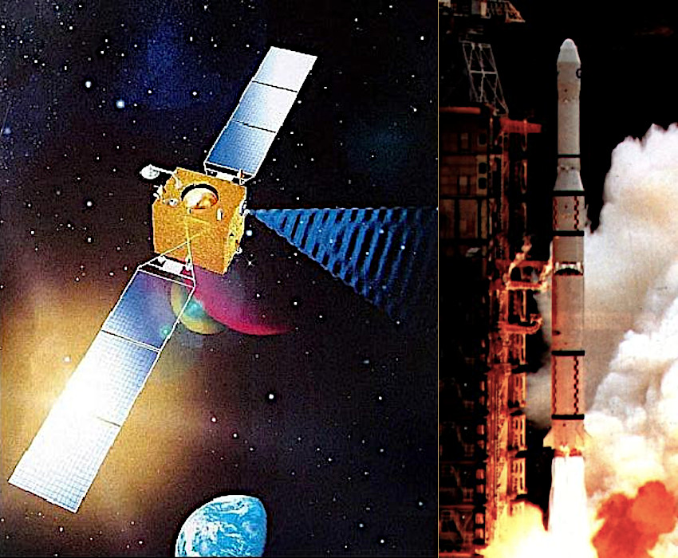 |
| Chang'e 2 | Long March 3C | China | 2010 | Our Moon 4179 Toutatis |
Luna observation from orbit for 6 months. Left orbit to flyby asteroid 4179 Toutatis. |  |
| Chang'e 3 | Long March 3B | China | 2013 | Our Moon | Soft landed on 6 December and deployed a rover. Continues to operate. |  |
| Chang'e 4 | 2018 | Soft landed on 3 January 2019 and deployed a rover. Continues to operate. | ||||
| Chang'e 5 | Long March 5 | China | 2020 | Our Moon | Orbiter and lander with sample return to Earth. | 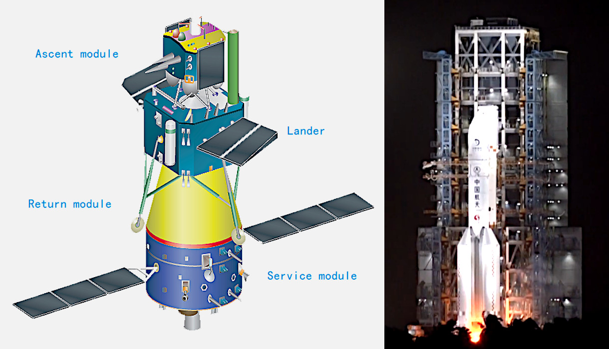 |
| Chang'e 5-T1 | Long March 3C | China | 2014 | Our Moon | Demonstration of re-entry capsule for Chang'e 5 sample-return mission at lunar return velocity. |  |
| Clementine | Titan II(23)G | U.S. | 1994 | Our Moon | Luna observation from orbit. Failed following departure from luna orbit. |  |
| Dawn | Delta II 7925H | U.S. | 2007 | Dwarf 4 Vesta, Dwarf 1 Ceres |
First spacecraft to orbit two extraterrestrial bodies, the first spacecraft to visit Vesta, and the first to orbit a dwarf planet. | 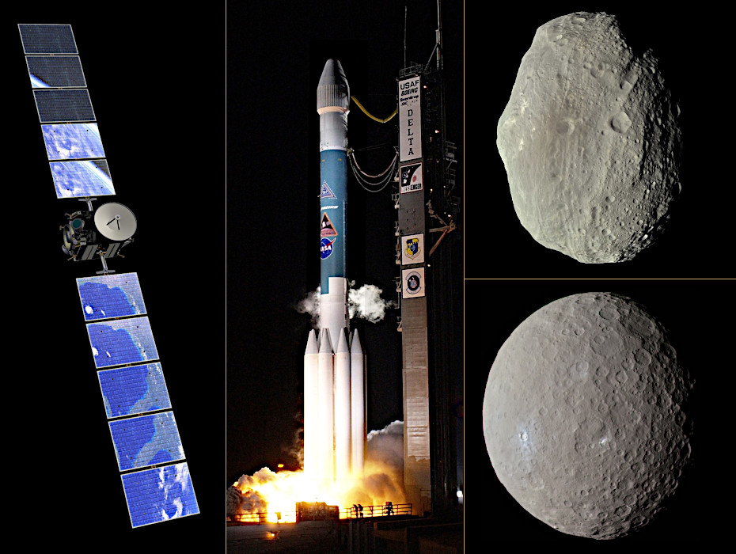 |
| Deep Impact | Delta II 7925 | U.S. | 2005 | Comet 9P Tempel | Studied 9P interior composition by releasing an impactor which successfully collided with the comet's nucleus. | 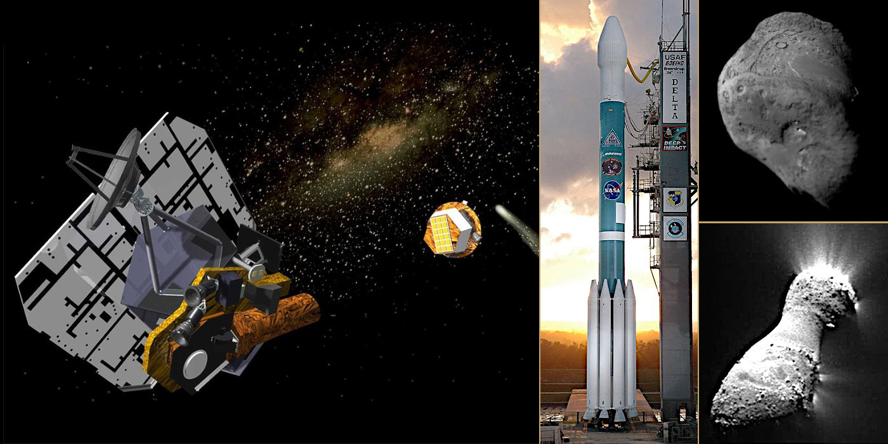 |
| Comet 103P Hartley | Flyby in 2010 of 103P/Hartley as part of the EPOXI mission. Was able to approach within 700 kilometers. | |||||
| Deep Space 1 | Delta II 7326 | U.S. | 1998 | Asteroid 9969 Braille, Comet 19P Borrelly |
NASA technology demonstration spacecraft part of the New Millennium Program. Carried out a flyby of asteroid 9969 Braille. Extended to include an encounter with comet 19P/Borrelly. |  |
| DSCOVR | SpaceX Falcon 9 v1.1 | U.S. | 2015 | Our Sun | Solar wind and coronal mass ejection monitoring, as well as Earth climate monitoring. Deep Space Climate Observatory (DSCOVR; formerly known as Triana) is a NOAA satellite. |  |
| Explorer 35 | Delta E1 | U.S. | 1967 | Our Moon | Magnetospheric probe, studying the Moon and space. Deactivated in 1973 and presumed to have impacted the Moon. |  |
| Explorer 49 | Delta 1913 | U.S. | 1973 | Our Moon | Radio astronomy spacecraft operated in lunar orbit. Orbit to avoid interference from terrestrial radio sources. |  |
| Galileo | Space Shuttle STS-34 / IUS | U.S. | 1989 | Asteroid 951 Gaspra | Flew past 951 Gaspra which is an S-type asteroid that orbits very close to the inner edge of the asteroid belt. |  |
| Planet Jupiter | First spacecraft to orbit Jupiter and record its atmospheric composition. Also studied moon Io's volcanism and interactions with Jupiter. It launched the first probe into Jupiter, measuring atmosphere. | |||||
| Asteroid 243 Ida | Destined for Jupiter, flew past 243 Ida which is an S-type asteroid in the Koronis family of the asteroid belt. | |||||
| Genesis | Delta 7326-9.5 | U.S. | 2001 | Our Sun | Part of NASA's Discovery program, it flew to the Earth-Sun L1 point and spent two years collecting samples of the solar wind. It crash landed on return to Earth but useful data was salvaged. |  |
| Giotto | Ariane 1 | Europe | 1985 | Comet 1P Halley | Flew by and studied Halley's Comet and was the first spacecraft to make close up observations of a comet. It approached the nucleus at a distance of 596 kilometers. |
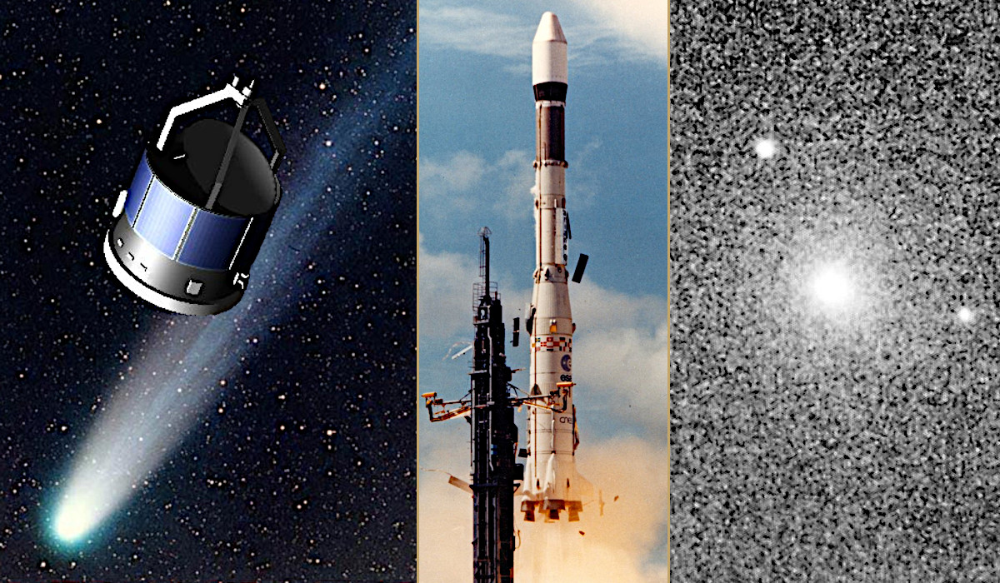 |
| Comet 26P | Flew by the Comet 26P Grigg-Skjellerup in 1992 at a distance of about 200 km. | |||||
| GRAIL A, B | Delta II 7920H | U.S. | 2011 | Our Moon | Gravitational field mapping of Moon. Two craft, "Ebb" and "Flow" launched together and impacted the Moon seperately. |  |
| Hayabusa | M-V | Japan | 2003 | Asteroid 25143 Itokawa |
Formerly known as MUSES-C, studied the asteroid in 2005 then landed on it and collected samples. These were returned to Earth aboard the spacecraft in 2010. Also carried a minilander which failed. |  |
| Hayabusa2 | H-IIA 202 | Japan | 2014 | Asteroid 162173 Ryugu |
Carried multiple science payloads for remote sensing, sampling, and four small rovers that investigated the asteroid surface and collected samples. It is expected to return to Earth in 2020. |  |
| Helios A | Titan IIIE | Germany | 1974 | Our Sun | Observations of solar wind, magnetic and electric fields, cosmic rays and cosmic dust between Earth and Sun. A pair of probes launched into heliocentric orbit for the purpose of studying solar processes. |  |
| Helios B | 1976 | Observations of solar wind, magnetic and electric fields, cosmic rays and cosmic dust between Earth and Sun. A pair of probes launched into heliocentric orbit for the purpose of studying solar processes. | ||||
| Hiten | Mu-3S-II | Japan | 1990 | Our Moon | Designed for flyby, placed into luna orbit to extend mission. De-orbited and impacted on the moon on 10 April 1993. |  |
| Hope | H IIA | U.A.E. | 2020 | Planet Mars | Study daily and seasonal weather cycles and weather events in the lower atmosphere such as dust storms. | |
| IKAROS | H-IIA 202 | Japan | 2010 | Planet Venus | Solar sail technology development and interplanetary space exploration. IKAROS (Interplanetary Kite-craft Accelerated by Radiation Of the Sun). First spacecraft to use solar sailing as the main propulsion. |  |
| InSight | Atlas V 401 | U.S. | 2018 | Planet Mars | Interior Exploration using Seismic Investigations, Geodesy and Heat Transport (InSight). Lander to study the deep interior. Carried two Mars Cube One (MarCO) Cubesats to test them. |  |
| International Cometary Explorer (ICE) |
Delta-2914 | U.S. | 1978 | Comet 21P Giacobini–Zinner |
Formally known as ISEE-3 which observed solar phenomena. It was then directed to Comet Giacobini-Zinner where it passed through the plasma tail of comet within about 7,800 km of the nucleus in 1985. |  |
| Comet 1P Halley | Flew through comet Halley's tail with a minimum distance to the nucleus of 28 million km. | |||||
| ISEE-3 | Delta-2914 | U.S. | 1978 | Our Sun | Observed solar phenomena. ISEE 3 (International Sun-Earth Explorer 3), was part of the mother / daughter / heliocentric mission (ISEE 1, ISEE 2, and ISEE 3). |  |
| Juno | Atlas V 551 (AV-029) |
U.S. | 2011 | Planet Jupiter | Orbiter to measure composition, gravity field and magnetic field. It will also attempt to measure if Jupiter has a rocky core, the amount of water present, mass distribution, and its strong winds. | |
| LADEE | Minotaur V | U.S. | 2013 | Our Moon | Orbital study of lunar exosphere and dust in the Moon's vicinity. Intentionally crashed into the far side of the Moon. |  |
| LCROSS | Atlas V 401 | U.S. | 2009 | Our Moon | Observed impact of Centaur upper stage that launched it. Also impacted itself. | 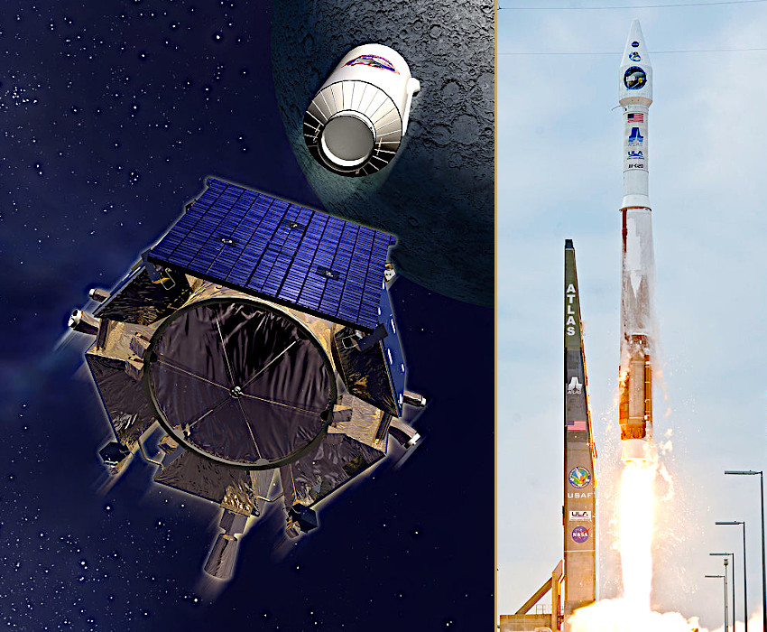 |
| Luna 2 | Luna 8K72 | U.S.S.R. | 1959 | Our Moon | Successful impact on 14 September 1959. First spacecraft to reach lunar surface. | 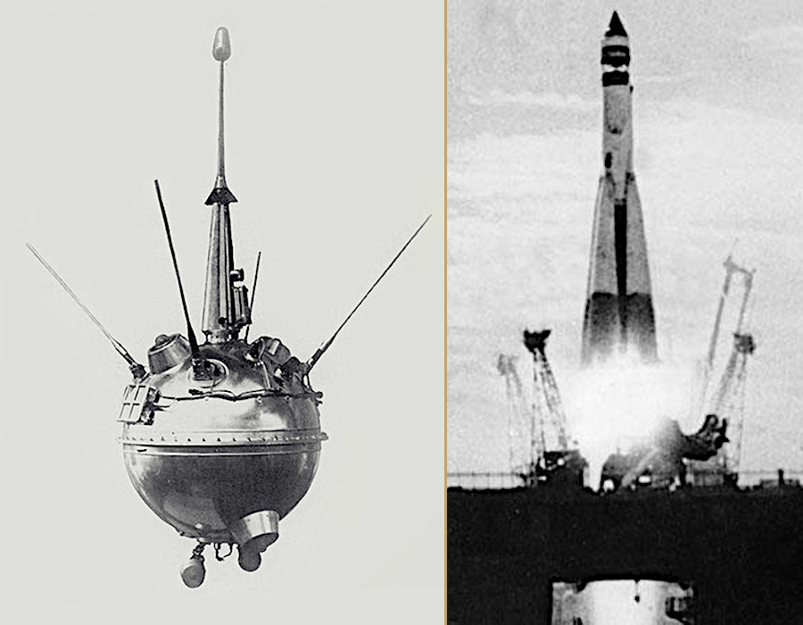 |
| Luna 3 | First gravity assist to fly around the moon and return towards earth. Returned first images of the far side of the Moon. | 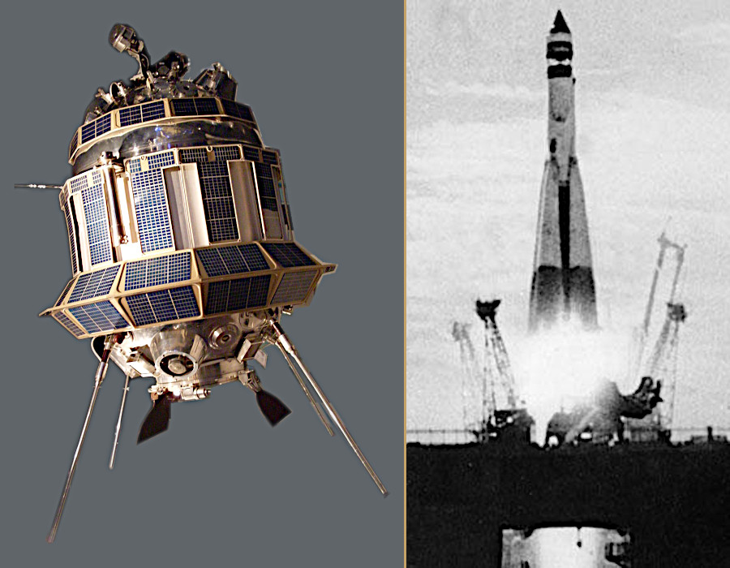 | ||||
| Luna 9 | Molniya-M | 1966 | Landed on 3 February 1966 and returned data until 6 February. First spacecraft to land successfully on the Moon. |  |
||
| Luna 10 | Entered orbit on 3 April 1966 and continued to return data until 30 May. First spacecraft to orbit the Moon. |  |
||||
| Luna 11 | Entered orbit on 28 August 1966. Failed to return images; other instruments operated correctly. |  |
||||
| Luna 12 | Entered orbit on 25 October and returned data until 19 January 1967. Completed photography of Luna 11. | |||||
| Luna 13 | Landed on 24 December. Returned images from the surface and studied soil. Operated until 28 December. | |||||
| Luna 14 | Molniya-M | 1968 | Entered orbit on 10 April. Tested communications for proposed crewed missions and studied the mass concentration. | |
||
| Luna 16 | Proton-K/D | 1970 | Soft landed on 20 September. First robotic probe to land on the Moon and return a sample of lunar soil to Earth. | 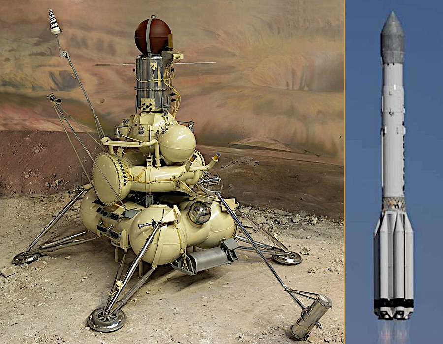 | ||
| Luna 17 | Soft landed on the Sea of Rains and deployed the Lunokhod 1 rover. First robotic rover to be used on the lunar surface. |  |
||||
| Luna 19 | 1971 | Systematic study of lunar gravitational fields and location of mascons (mass concentrations). | 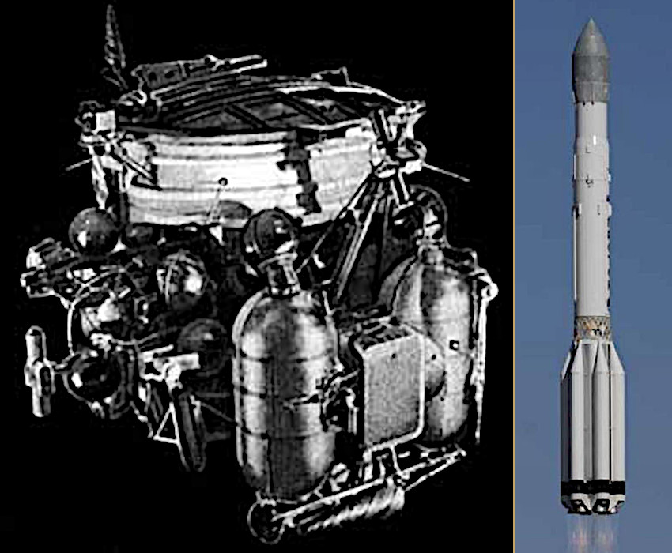 | |||
| Luna 20 | 1972 | Soft landed on the Moon in the Apollonius highlands. Returned samples to Earth. | ||||
| Luna 21 | 1973 | Soft landed and deployed the Lunokhod 2 rover. Second robotic rover to be used on the lunar surface. | |
|||
| Luna 22 | 1974 | Soft landed and deployed the Lunokhod 2 rover. Second robotic rover to be used on the lunar surface. | ||||
| Luna 24 | 1976 | Landed in Mare Crisium and returned a sample of lunar regolith. Final mission of the Soviet Luna programme. | 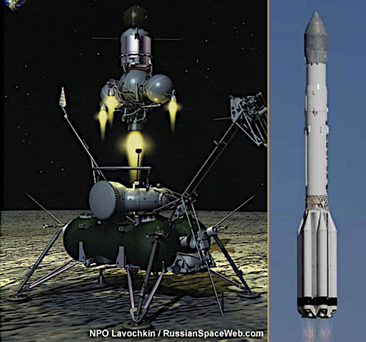 | |||
| Lunar Orbiter 1 | Atlas-Agena | U.S. | 1966 | Our Moon | Orbital insertion on 14 August. De-orbited early due to lack of fuel, impacted the Moon on 29 October 1966. | 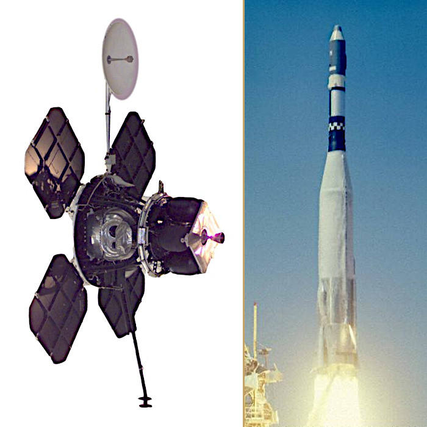 |
| Lunar Orbiter 2 | Orbital insertion in November for photographic mapping. De-orbit burn to impact on the far side of the moon. | |||||
| Lunar Orbiter 3 | 1967 | Orbital insertion on 8 February 1967 for photographic mapping mission. De-orbit burn to impact on the moon. | ||||
| Lunar Orbiter 4 | Orbital insertion on 8 May 1967 and operated until 17 July. De-orbit burn to impact on the moon. | |||||
| Lunar Orbiter 5 | Orbital insertion on 5 August 1967 and operated until 18 August. De-orbit burn to impact on the moon. | |||||
| Lunar Prospector | Athena II | U.S. | 1998 | Our Moon | Low polar orbit investigation including mapping of surface composition and polar ice deposits. | 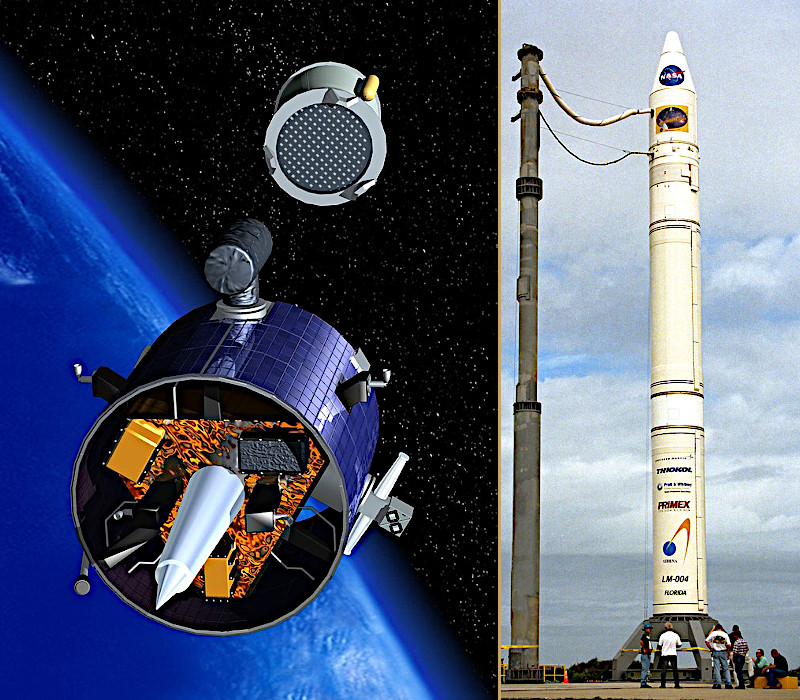 |
| Luna Reconnaissance Orbiter | Atlas V 401 | U.S. | 2009 | Our Moon | Luna Reconnaissance Orbiter (LRO), observation from orbit. | 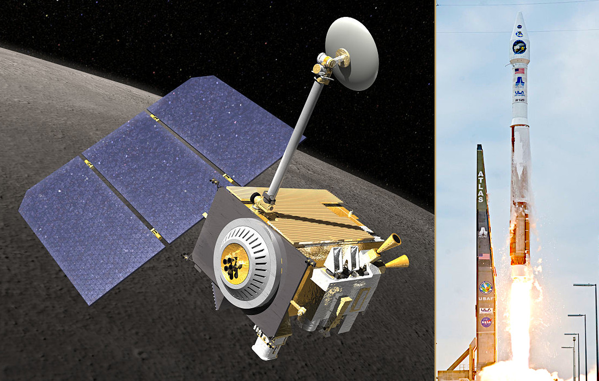 |
| Magellan | Space Shuttle STS-30 / IUS | U.S. | 1989 | Planet Venus | Map the surface using synthetic aperture radar and measure the planetary gravitational field. Also referred to as the Venus Radar Mapper. |  |
| Mariner 2 | Atlas LV-3 Agena-B | U.S. | 1962 | Planet Venus | Tets communications from the spacecraft near Venus and perform radiometric temperature measurements of Venus. First successful Venus flyby; minimum distance 34,773 km | |
| Mariner 4 | Atlas LV-3 Agena-D | 1965 | Planet Mars | Conduct closeup scientific observations of Mars and transmit observations to Earth. First spacecraft to reach and provide close-up images of Mars. |  |
|
| Mariner 5 | Atlas-SLV3 Agena-D | 1967 | Planet Venus | Probe atmosphere by radio occultation, measure the ultraviolet spectrum, and sample solar particles and magnetic field above the planet. Built as a backup to Mariner 4, but improved for an extra mission. |  |
|
| Mariner 6 | Atlas SLV-3D Centaur-D | 1969 | Planet Mars | Study the surface and atmosphere of Mars during close flybys. With Mariner 7, the first dual mission to Mars. |  |
|
| Mariner 7 | Study the surface and atmosphere of Mars during close flybys. With Mariner 6, the first dual mission to Mars. | |||||
| Mariner 9 | Atlas SLV-3C Centaur-D | 1971 | Planet Mars | Continued the atmospheric studies of Mariner 6 and 7, and maped over 70% of the Martian surface. First spacecraft to orbit another planet. |  |
|
| Mariner 10 | Atlas SLV-3D, Centaur-D1A |
1973 | Planet Mercury | Measured environment, atmosphere, surface, and body characteristics. It was was the first spacecraft to perform flybys of multiple planets (Mercury and Venus). |  |
|
| Mars 2020 | Atlas V 541 | U.S. | 2020 | Planet Mars | Investigate environment, surface geological processes, the possibility of past life, the potential for biosignatures within geological materials. | |
| Mars 2 | Proton K/D | U.S.S.R. | 1971 | Planet Mars | Consisted of orbiter and lander to study the solar wind, magnetic fields and martian surface. First spacecraft to reach the surface of Mars. |  |
| Mars 3 | Consisted of orbiter and lander to study the solar wind, magnetic fields and martian surface. First spacecraft to soft land on the surface of Mars. | |||||
| Mars 4 | 1973 | Carried instruments to study Mars from orbit, including cameras, a radio telescope, a magnetometer, and a gamma-ray spectrometer. Failed to orbit. | ||||
| Mars 5 | Carried instruments to study Mars from orbit, including cameras, a radio telescope, a magnetometer, and a gamma-ray spectrometer. successfuly orbited Mars. | |||||
| Mars 6 | Both consisted of a coast stage (flyby) and lander to study Mars including magnetic fields and the martian surface. Part of the Soviet Mars program. |  |
||||
| Mars 7 | ||||||
| Mars Exploration Rovers | Delta II 7925 | U.S. | 2003 | Planet Mars | Two rovers, Spirit and Opportunity, landed on opposite sides of Mars. Provided extensive geological analysis of Martian rocks and planetary surface features. Spirit functioned until it got stuck and ceased communications in 2010. Opportunity was able to stay operational until 2018. | |
| Mars Express | Soyuz-FG Fregat |
Europe | 2003 | Planet Mars | Consisted of Orbiter and a lander designed to perform exobiology and geochemistry research. First planetary mission by the European Space Agency (ESA). Lander failed to fully deploy. |  |
| Mars Global Surveyor | Delta II 7925 | U.S. | 1996 | Planet Mars | Global mapping mission that examined all of Mars, from the ionosphere to the surface. Completed primary mission in 2001 and was in its third extended mission phase in 2006 when it failed. |  |
| Mars Odyssey | Delta II 7925 | U.S. | 2001 | Planet Mars | Studying climate and geology from orbit; communications relay for Spirit and Opportunity rovers.Longest surviving spacecraft in orbit around a planet other than Earth. | |
| Mars Orbiter Mission | PSLV-XL | India | 2013 | Planet Mars | A project to develop the technologies for designing, planning, management, and operations of an interplanetary mission. India's first interplanetary mission and the fourth space agency to reach Mars. | |
| Mars Pathfinder | Delta II 7925 | U.S. | 1996 | Planet Mars | Lander and rover with scientific objectives and "proof-of-concept" for various technologies. Second project from NASA's Discovery Program, which promotes low-cost spacecraft and frequent launches. |  |
| Mars Reconnaissance Orbiter | Atlas V 401 | U.S. | 2005 | Planet Mars | Multipurpose spacecraft designed to conduct reconnaissance and exploration from orbit. Used to analyze the landforms, stratigraphy, minerals, and ice. MRO's telecommunications will transfer more data back to Earth than all previous missions combined. It has enough propellant to keep functioning into the 2030s. | |
| Mars Science Laboratory | Atlas V 541 | U.S. | 2011 | Planet Mars | MSL Lander and rover to determine the landing site's habitability, the role of water, the study of climate and the geology. Part of NASA's Mars Exploration Program. |  |
| MAVEN | Atlas V 401 | U.S. | 2013 | Planet Mars | Mars Atmosphere and Volatile Evolution (MAVEN) is an orbital spacecraft developed by NASA to study Mars' atmosphere. Part of the Mars Scout Program. | |
| MESSENGER | Delta II 7925H-9.5 | U.S. | 2004 | Planet Mercury | Studied chemical composition, geology, and magnetic field. MESSENGER is a backronym for "MErcury Surface, Space ENvironment, GEochemistry, and Ranging". |  |
| NEAR Shoemaker | Delta II 7925-8 | U.S. | 1996 | Asteroid 253, Asteroid 433 |
Near Earth Asteroid Rendezvous – Shoemaker (NEAR Shoemaker) flew within 1200 km of 253 Mathilde. Flew past 433 Eros in 1998, orbited it in 2000 and photographed its surface, and landed on it in 2001. |
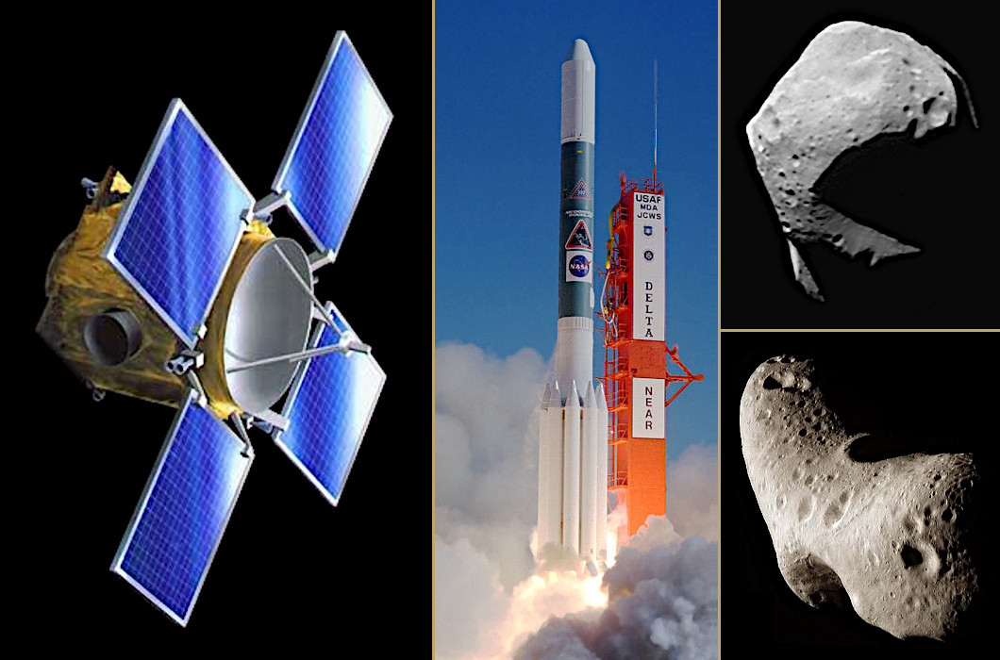 |
| New Horizons | Atlas V (551) Star 48B |
U.S. | 2006 | Dwarf Pluto, Asteroid 132524 APL |
Part of NASA's New Frontiers program. Primary mission to perform a flyby study of the Pluto system in 2015. Secondary mission to fly by and study one or more other Kuiper belt objects. |  |
| OSIRIS-REx | Atlas V 411, AV-067 |
U.S. | 2016 | Asteroid 101955 Bennu |
Origins, Spectral Interpretation, Resource Identification, Security, Regolith Explorer is to obtain a sample from 101955 Bennu. It is expected to return with its sample to Earth in 2023. |  |
| Parker Solar Probe | Delta-4H (upg.) | U.S. | 2018 | Our Sun | Close-range solar coronal study. Parker Solar Probe (previously Solar Probe, Solar Probe Plus, or Solar Probe+) is a NASA robotic spacecraft. |  |
| Phobos 2 | Proton K/D | U.S.S.R. | 1988 | Planet Mars | Designed to explore the moons of Mars, Phobos and Deimos, from orbit and with landers. Orbital operations successful but landers not deployed. | |
| Phoenix | Delta II 7925 | U.S. | 2007 | Planet Mars | Lander used instruments to assess the local habitability and to research the history of water there. Part of the Mars Scout Program in partnership of universities in the United States, Canada and Europe. | |
| Pioneer 4 | Juno II | U.S. | 1959 | Our Moon | Flew by at greater altitude than expected, out of instrument range. First U.S. spacecraft to leave Earth orbit. |  |
| Pioneer 5 | Thor Able | 1960 | Our Sun | Investigated interplanetary space between the orbits of Earth and Venus. It Measured magnetic fields, solar flare particles, and ionization in space. A spin-stabilized space probe in the NASA Pioneer program. | ||
| Pioneer 6 | Thor Delta E | 1965 | Part of the NASA Pioneer program to investigate space between the orbits of Earth and Venus. Network of solar-orbiting "space weather" monitors, observing solar wind, cosmic rays and magnetic fields. | |||
| Pioneer 7 | 1966 | |||||
| Pioneer 8 | 1967 | |||||
| Pioneer 9 | 1968 | |||||
| Pioneer 10 | Atlas SLV-3C Centaur-D Star-37E |
1972 | Planet Jupiter | Studied the asteroid belt, the environment around Jupiter, the solar wind and cosmic rays. First probe to cross the asteroid belt; first to Jupiter; first on an interstellar trajectory; now in the outer regions of the Solar System but un-contactable. |  |
|
| Pioneer 11 | Atlas SLV-3D Centaur-D1A Star-37E |
1973 | Planet Jupiter, Planet Saturn |
Studied the asteroid belt, the environment around Jupiter, solar wind and cosmic rays. First probe to encounter Saturn. Became the second to achieve the escape velocity to leave the Solar System. | ||
| Pioneer Venus Multiprobe | Atlas SLV-3D, Centaur-D1AR | U.S. | 1978 | Planet Venus | Carried 1 large and 3 small probes to collect data as they descended into the atmosphere. All probes continued transmitting until impact. One survived and continued to transmit data from the surface. | |
| Pioneer Venus Orbiter | Atlas SLV-3D, Centaur-D1AR | U.S. | 1971 | Planet Venus | Carried 17 experiments to study various aspects. Was also able to observe Halley's Comet from Venus orbit. Also known as Pioneer Venus 1 or Pioneer 12. |  |
| Ranger 6 | Atlas-Agena | U.S. | 1964 | Our Moon | Impacted on 2 February 1964. Failed to return images due to power system failure. | 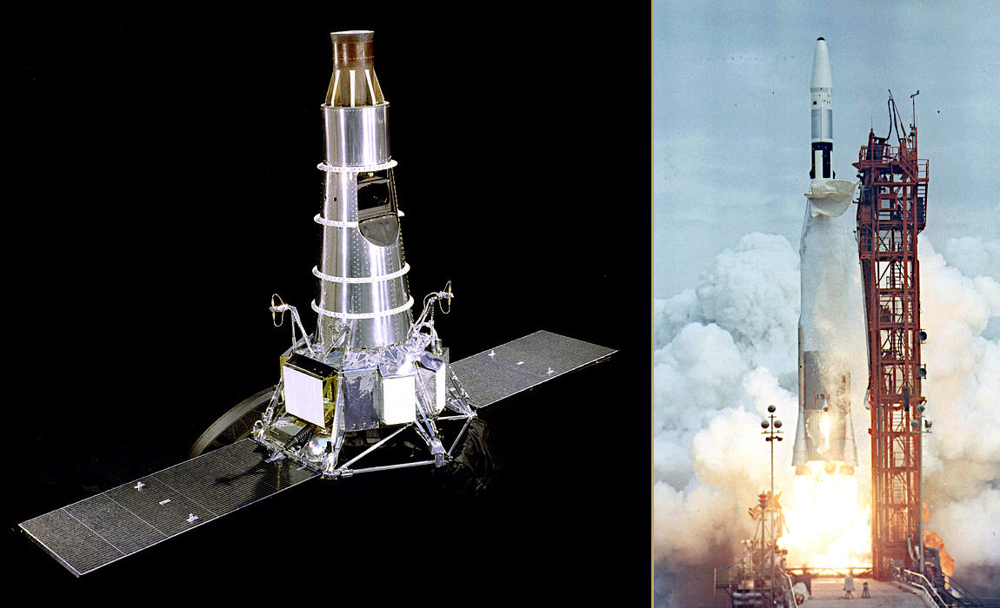 |
| Ranger 7 | Impacted on 30 July 1964. Transmitted photographs of the lunar surface during the final minutes to impact. | |||||
| Ranger 8 | 1965 | Impacted on 20 February 1965. Transmitted photographs of the surface during the final minutes to impact. | ||||
| Ranger 9 | Impacted on 24 March 1965. Transmitted television pictures of the surface during the final minutes to impact. | |||||
| Rosetta | Ariane 5G, V-158 |
Europe | 2004 | Asteroids 2867, 21, Comet 67P | Part of ESA's Horizon 2000 programme. Flew past asteroids 2867 Šteins and 21 Lutetia on its way to study of comet 67P/Churyumov–Gerasimenko. |  |
| Sakigake | Mu-3S-II | Japan | 1985 | Comet 1P Halley |
Japan's first interplanetary spacecraft. The first deep space probe other than the U.S. and U.S.S.R. Observed space plasma and magnetic field in space. Identical to Suisei, but carried a different payload. | 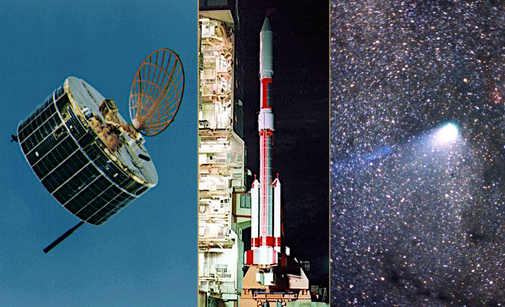 |
| SELENE | H-IIA 2022 | Japan | 2007 | Our Moon | Luna observation from orbit. Also called Kaguya. Impacted moon 10 June 2009. | 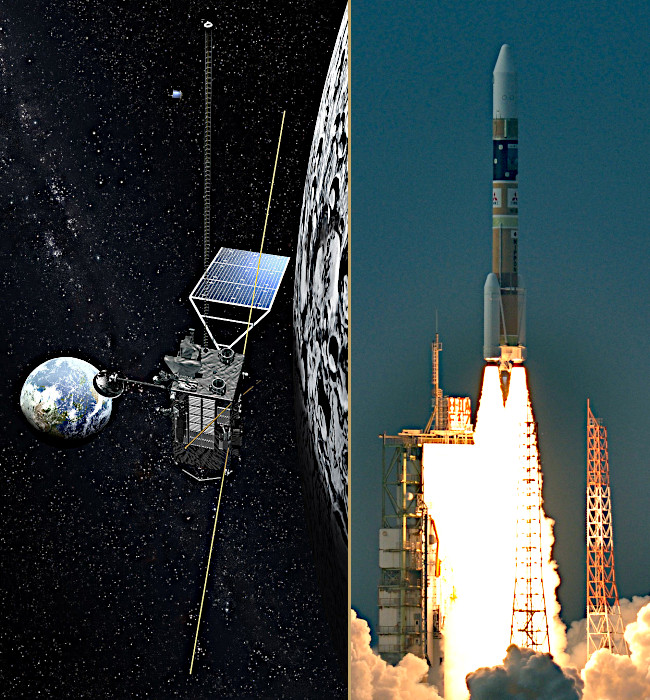 |
| SMART-1 | Ariane 5G | Europe | 2003 | Our Moon | Luna observation from orbit. Impacted moon 3 September 2006. |  |
| SOHO | Atlas II AS | Europe | 1996 | Our Sun | Investigation of Sun's core, corona, and solar wind; comet discoveries. The Solar and Heliospheric Observatory (SOHO) was built by a European consortium. Originally planned as a two-year mission, it continues to operate after over 20 years. |  |
| Solar Orbiter | Atlas V 411 (AV-087) | Europe | 2020 | Our Sun | Intended to perform detailed measurements of the inner heliosphere and nascent solar wind, and perform close observations of the polar regions of the Sun. NASA is a joint operator and contributor. |  |
| Stardust | Delta II 7426-9 | U.S. | 1999 | Asteroid 5535, Comet 81P Wild | Flew by and studied the asteroid 5535 Annefrank en route to its primary mission to collect dust samples from the coma of comet Wild 2. | 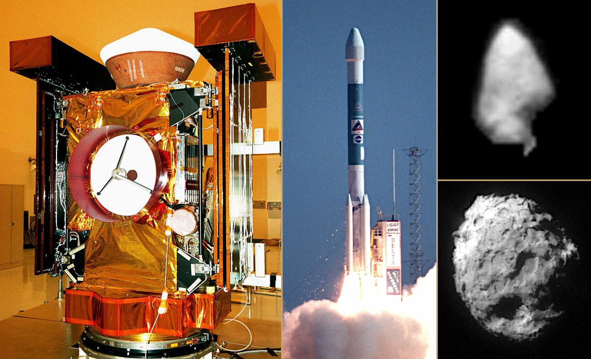 |
| STEREO A, STEREO B |
Delta 7925-10L | U.S. | 2006 | Our Sun | Stereoscopic imaging of coronal mass ejections and other solar phenomena. STEREO (Solar TErrestrial RElations Observatory) is the third mission in NASA's Solar Terrestrial Probes program. |  |
| Suisei | Mu-3S-II | Japan | 1985 | Comet 1P Halley |
Took UV images of the hydrogen corona and measured solar wind parameters. Encountered Comet Halley at 151,000 km on sunward side during 1986. Identical to Sakigake, but had a different payload. | |
| Surveyor 1 | Atlas-Centaur | U.S. | 1966 | Our Moon | Landed on 2 June 1966 and Returned data until 13 July. First U.S. spacecraft to successfully land on the Moon. |  |
| Surveyor 3 | 1967 | Landed on 20 April 1967 and Returned data until 3 May. Visited by Apollo 12 astronauts in 1969. | ||||
| Surveyor 5 | Landed in Mare Tranquillitatis on 11 September. Returned data until 17 December. | |||||
| Surveyor 6 | Landed on 10 November, Took off and landed again 2.4 m away. Returned data until 14 December. | |||||
| Surveyor 7 | 1968 | Landed 29 kilometres from Tycho crater on 10 January. Returned data until 21 February. | ||||
| Tianwen-1 | Long March 5 (Y4) | China | 2020 | Planet Mars | Find evidence of life, produce surface maps, characterize soil composition and water ice distribution, examine the atmosphere. | |
| Trace Gas Orbiter | Proton-M Briz-M |
Europe | 2013 | Planet Mars | ExoMars Trace Gas Orbiter (TGO or ExoMars Orbiter) is an atmospheric research orbiter and the Schiaparelli demonstration lander. A European Space Agency and Russian Roscosmos project. | |
| Ulysses | Space Shuttle STS-41 | Europe | 1990 | Our Sun | Solar south and north polar observations to investigate the solar wind, interplanetary magnetic field, cosmic rays and energetic particles. Formerly the International Solar Polar Mission (ISPM). | |
| Vega 1, Vega 2 |
Proton 8K82K | Russia | 1984 | Planet Venus, Comet 1P Halley |
Both Contained a landing probe and balloon to study the atmosphere and the surface. After releasing the lander the spacecraft was redirected by Venus' gravity to intercept and study Halley's Comet. | 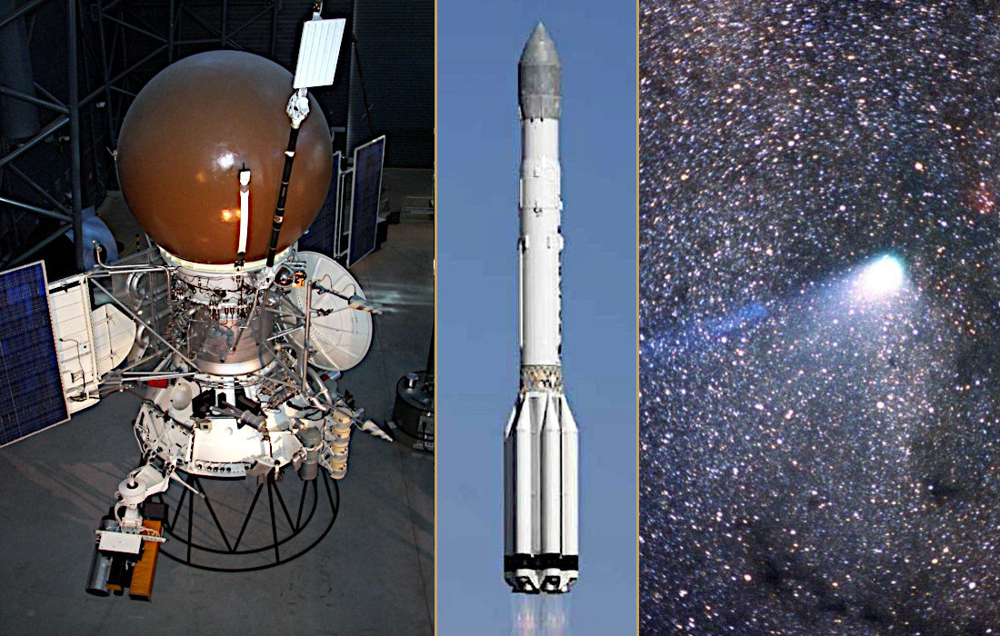 |
| Venera 4 | Molniya 8K78M | U.S.S.R. | 1967 | Planet Venus | A probe to parachute to the surface, and a carrier/flyby spacecraft for delivery and communications. First successful probe to perform in-place analysis of the environment of another planet. |  |
| Venera 5 | 1969 | A capsule containing scientific instruments was jettisoned and parachuted to the surface returning data from the atmosphere. Similar to Venera 4 but of a stronger design. |  |
|||
| Venera 6 | ||||||
| Venera 7 | 1970 | The lander remained attached to the interplanetary bus during the initial stages of atmospheric entry and then ejected. First successful landing on another planet; signals from surface for 23 minutes. | ||||
| Venera 8 | Molniya-M/MVL | 1972 | Atmospheric probe and lander with instrumentation for temperature, pressure, light sensors, gamma ray spectrometer, gas analyzer. Signals returned from surface for 50 minutes. | |||
| Venera 9 | Proton-K/D | 1975 | Acted as communications relay for landers, explored cloud layers and atmospheric parameters with several instruments. Sent the first images from the surface; operated on surface for 53 minutes. |  |
||
| Venera 10 | Acted as communications relay for landers, explored cloud layers and atmospheric parameters with several instruments. | |||||
| Venera 11 | Proton-K/D-1 8K82K | Russia | 1978 | Minimum distance 34,000 km; deployed lander and then acted as communications relay. Soft landings; failure of some instruments. | ||
| Venera 12 | ||||||
| Venera 13 | 1981 | The lander had cameras to take pictures of the ground and spring-loaded arms to measure the compressibility of the soil. Survived on surface for 127 minutes. | ||||
| Venera 14 | The lander had cameras to take pictures of the ground and spring-loaded arms to measure the compressibility of the soil. Survived on surface for 57 minutes. | |||||
| Venera 15 | Proton-K/D-1 | 1983 | Radar mapping from orbit. |  |
||
| Venera 16 | Radar mapping from orbit. | |||||
| Venus Express | Soyuz-FG Fregat |
Europe | 2005 | Planet Venus | Atmospheric studies; planetary imaging; magnetic observations. First Venus exploration mission of the European Space Agency (ESA). |  |
| Viking 1, Viking 2 |
Titan IIIE Centaur | U.S. | 1975 | Planet Mars | Included an orbiter for photography and mapping and a lander for photography and experiments. Viking 1 was the first lander to fully complete its mission. Viking 2 last contact in 1980. |  |
| Voyager 1 | Titan IIIE | U.S. | 1977 | Planet Jupiter | Part of the Voyager program, flybys of Jupiter. Studied the weather, magnetic fields, and rings. The first probe to provide detailed images of Jupiter's moons. | |
| Planet Saturn | Part of the Voyager program, flybys of Saturn and its largest moon, Titan. Studied the weather, magnetic fields, and rings. The first probe to provide detailed images of Saturn's moons. | |||||
| Voyager 2 | Titan IIIE | U.S. | 1977 | Planet Jupiter, Planet Saturn, Planet Uranus, Planet Neptune |
Part of the Voyager program to study the outer Solar System. It remains in contact through the NASA Deep Space Network. Only spacecraft to visit Uranus and Neptune. | |
| WIND | Delta II 7925-10 | U.S. | 1994 | Our Sun | Solar wind measurements. Global Geospace Science (GGS) Wind satellite, a NASA science spacecraft. | |
| Zond 3 | Molniya 8K78 | U.S.S.R. | 1965 | Our Moon | Flew past the Moon on 20 July 1965 and conducted technology demonstration for future planetary missions. | 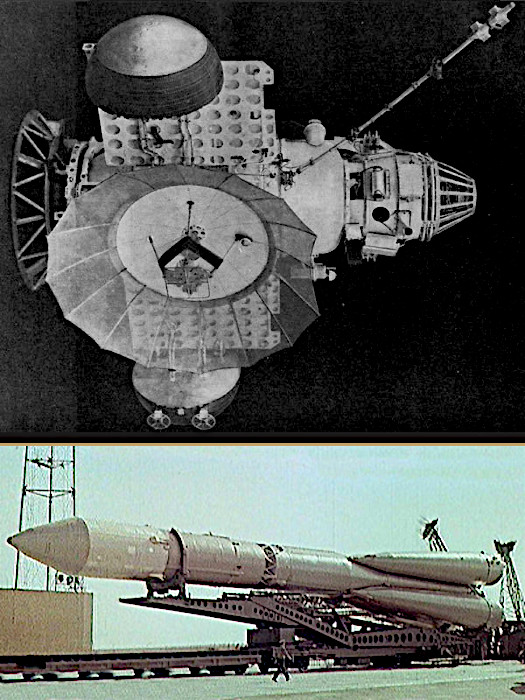 |
| Zond 5 | Proton-K/D | 1968 | First Lunar spacecraft recovered after return to Earth. First life (tortoises) to travel around the Moon. | 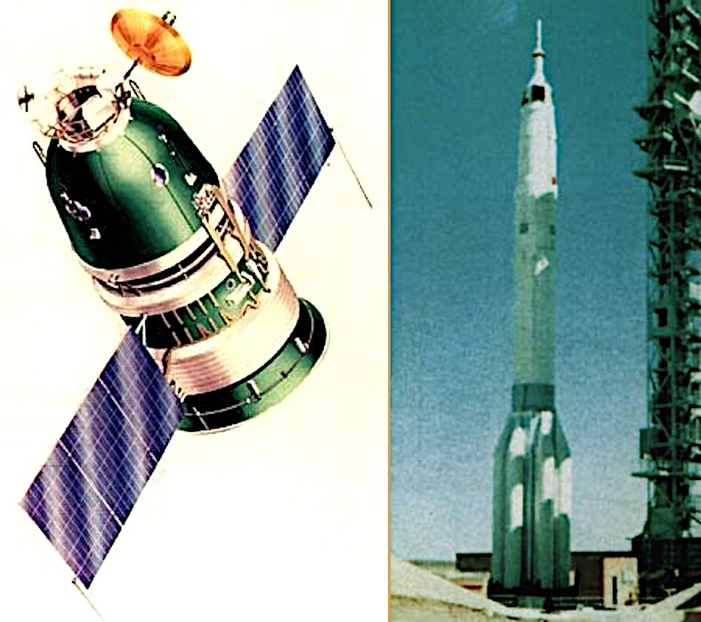 | ||
| Zond 6 | Closest approach 2,420 km on 14 November, returned to Earth on 17 November. Failed to be recovered. | |||||
| Zond 7 | 1969 | Closest approach 1,200 km on 10 August, returned to Earth on 14 August. Landed in Kazakhstan. | ||||
| Zond 8 | 1970 | Investigations of the Moon and testing of onboard systems. Photographed the Earth and luna surface. |
{kind=link}
{kind=link}
{kind=link}
{kind=link}
{kind=link}
{kind=link}
{kind=link}
{kind=link}
{kind=link}
{kind=link}
{kind=link}
{kind=link}
{kind=link}
{kind=link}
{kind=link}
{kind=link}
{kind=link}
{kind=link}
{kind=link}
{kind=link}
{kind=link}
{kind=link}
{kind=link}
{kind=link}
{kind=link}
{kind=link}
{kind=link}
{kind=link}
{kind=link}
{kind=link}
{kind=link}
{kind=link}
{kind=link}
{kind=link}
{kind=link}
{kind=link}
{kind=link}
{kind=link}
{kind=link}
{kind=link}
{kind=link}
{kind=link}
{kind=link}
{kind=link}
{kind=link}